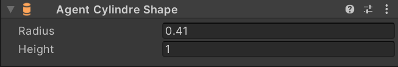

Authoring (Beginner)
Authoring is MonoBehaviour components for Game Objects used for synchronizing or baking Entities components.
These components only contain authoring information and not tied to logic.
As this package is designed to be modular, most of the navigation behaviors spread across many components. This enables a high variety of customizability as are user can add and remove behaviors even per agent.
Agent
This is the main component that marks GameObject/Entity as Agent.
In this package, everything that participates in navigation will be Agent, no matter if it is just a static obstacle or dynamic.
If the agent type is set to Steering it will also include Steering and Arrival behaviors.
This will allow the agent to steer towards destination and smooth stop.

Agent Cylinder Shape
This component specifies the agent shape that will be used in navigation. Cylinder shape will indicate that the agent should be simulated in 3d space with Y as an up axis.
Agent Circle Shape
This component specifies the agent shape that will be used in navigation. The circle shape will indicate that the agent should be simulated in 2d space with Z as an up axis.

Agent Collider
This component will enable collisions between agents.

Agent Sonar Avoid
This component will enable avoidance between nearby agents using the Sonar Avoidance solution. It implements Local Avoidance package.

Agent Nav Mesh
This component will enable these agents to use Unity's builtin NavMesh system. For more information check AI Navigation.

Agent Separation
This component enables one of the Boids behaviors called separation. It is very similar to Agent Collider key difference, that it uses velocity for avoidance and is less strict.

Spatial Partitioning Settings
This component is singleton and allows modifying some properties of spatial partitioning.